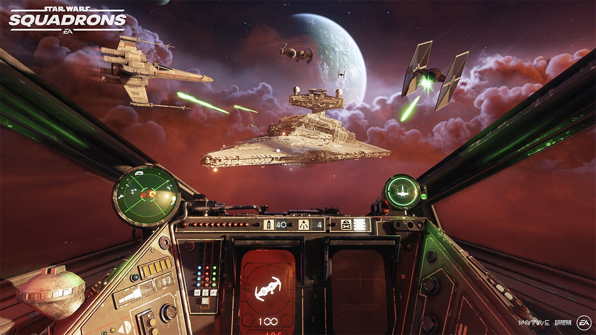
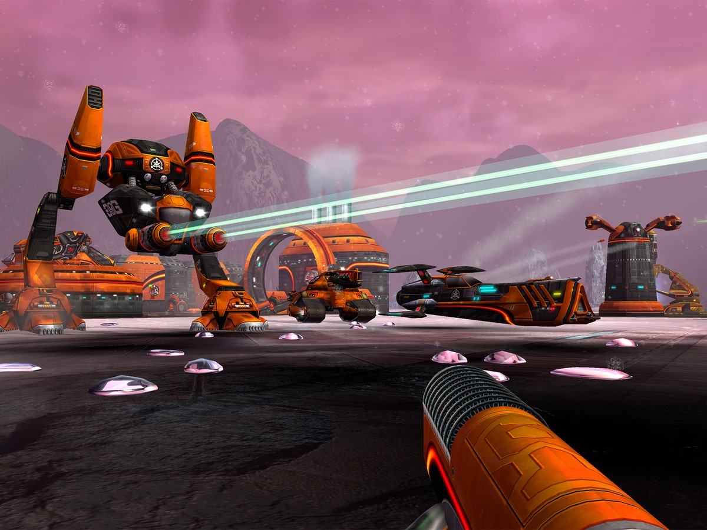
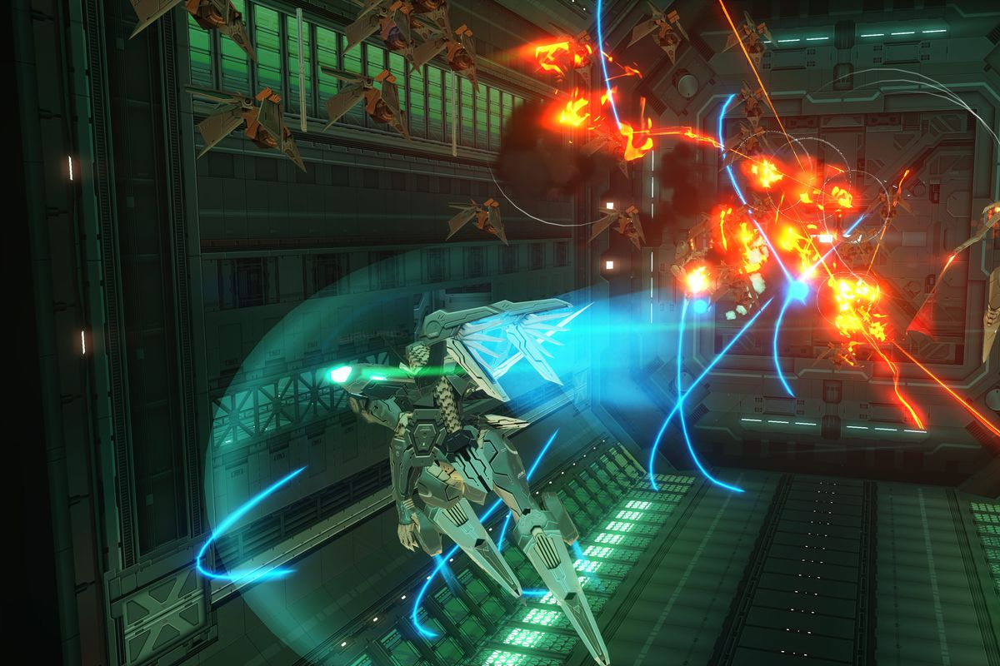

The Mass Effect trilogy remains the best sci-fi series in gaming history.
The Mass Effect trilogy remains the best sci-fi series in gaming history.
 Squadrons was EA Games' reboot of the X-wing series of PC games. It was great, with VR support and updated game mechanics, but too bad no one bought it.
 Battlezone 2 was a unique blend of RTS and FPS gameplay.
 Zone of the Enders 2 was a sci-fi mecha anime but formed into a classic game.